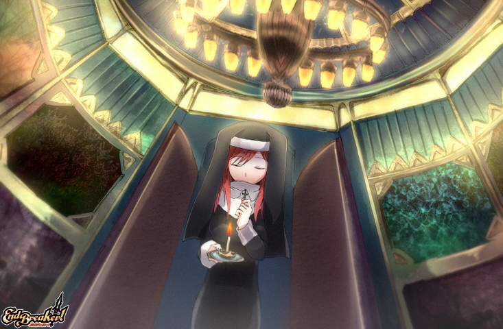

『≪幻想武装博物館≫ラッシュ・アンド・ダッシュ』仮プレイング
『≪幻想武装博物館≫ラッシュ・アンド・ダッシュ』（担当マスター：猫目みなも）の仮プレイングよ。
プレイングは
【心情】
鉄球が転がってくるなんでなんかありふれたトラップね。
これを乗り越えた先の宝箱が鉄の金庫というのは勘弁してほしいわ。
【目的】
とにかくトラップ通路から逃げること。
【基本行動】
転移装置を目指す
【戦闘の基本】
ゴーレムに対しては常にダッシュし斬り込む感じで。
時には振り切ってその先へ逃げることも考えるわ。
アビリティは最初の一撃は電刃衝で。
...
ゴールデンウイーク・５連続公認イベントの参加予定 #endbreaker #psychichearts
どうも、背後です。
ゴールデンウイーク・５連続公認イベントは
東京
と
大阪
に参加予定です。
とりあえずここまでで。
『バッファロー伊香保温泉怪人襲来』仮プレイング
『バッファロー伊香保温泉怪人襲来』（担当：小茄MS）の仮プレイングです。
※2014/04/25 23:43更新しました。
（以下プレイング）
【基本の心情】
温泉を破壊するなんて許せません。
こういう文化を大事にしない怪人には正義の鉄槌を！
【温泉待機】
水着を着用して温泉に浸かって待ちます。
水着のデザインはちょっと子供っぽい
フリルが多くついたライトグリーンのタンキニです。
待っている間は仲間の人と普通に雑談したりします。
でも、気は抜きません。
怪人が現れたら「きゃ...
『友達って、なんで』仮プレイング
『友達って、なんで』（担当：籐堂あずみMS）の仮プレイングよ。
（以下プレイング）
【配布の件】
しずるさんの配布を希望するわ。
【しずるさんへのメッセージ】
あなたは、決してひとりじゃない……
絶望しない限り、希望がある……
絶望することで、悲しむ人がいることをわかってほしい……
私は、あなたの友達になり、そばに寄り添い、支えるわ。
だから、私は、しずるさんを闇堕ちから救いたいの！
【戦闘】
一応学生服で侵入するわ。
侵入はだれかのプラチナチケットに便乗して。
しずるさ...
『手作りアクエリオ様クッキーが美味な理由』仮プレイング
『手作りアクエリオ様クッキーが美味な理由』（担当マスター：質種剰）の仮プレイングよ。
プレイングは
まあ、色々事情は聞かせてもらったわ。
不倫はいけないことよ。
だから、マリカさんには同情するわね……。
でも、マスカレイドになってしまったからには退治せねばならないわ。
まず、今回の戦闘で使う馬を借りておくわ。
そしてそれに乗って行動するわ。もちろんキャバリエ活性化で。
私は付近の一般人の避難誘導を行うけど、
この際に馬体がマリカさんに対して壁になるように誘導を行うわ。
それと、ゴンド...
『入学式にはメイド服で』仮プレイング
『入学式にはメイド服で』（るうMS）の仮プレイングだ。
いろいろとおそロシアなのは気にしないでほしい。
（以下プレイング）
メイド服登校……まるでロシアである。
ロシアでは学生服はメイド服らしい。
特に入学式や卒業式ではメイド服が活躍するらしい。
ここはもっともらしく説明した上で、
「メイド登校……ロシアの風習おそロシア！」とダジャレを混ぜつつ
カメラを構えて興味をひいてみよう。
まあ、いろいろと騒がしくなった所で戦闘開始だ。
戦闘に関しては基本戦艦斬り、HP半分でシャウト使用。
た...
私の「祈り」

「祈り」をテーマにしたイラストよ。
以下、宗教に関わる話につき閲覧注意ね。
この作品は、株式会社トミーウォーカーのＰＢＷ『エンドブレイカー！』用のイラストとして、「導きの紅き月・ルア・ツァオ（c28515）」が作成を依頼したものです。
イラストの使用権は「ルア・ツァオ」に、著作権は「友憂希」に、全ての権利は株式会社トミーウォーカーが所有します。
祈りに関してちょっと一言。
祈りって、宗教とかなり関わる所が多いけど……宗教って、「人をしばるもの」じゃないと思うわ。
私は、宗教は「人を...
『新春！ パンパーティー！』仮プレイング
『新春！ パンパーティー！（担当マスター：りん）』の仮プレイングだ。
旅団【Ancient Sphere】から参加。
日課となっている古本収集の帰り道、ベーグルと紅茶の茶葉を大量に買い込んで参加。
知り合いのユッカ（c01296）とリゼルグ（c03551）を見かけたので声をかける。
ランスブルグの国立図書館館長という公職に就いたことを報告。
まあ、「こうしてパンをいっぱい食べられるようになった今の時代は幸せだな」とつぶやきながら昔語りを開始する。
昔は壁の中で、処刑におびえながら暮ら...
『復興の地ランスブルグ』仮プレイング
『復興の地ランスブルグ（担当マスター：のずみりん）』の仮プレイングだ。
まずは第一稿。
【学者】として第二階層の『アカデミック街』に居を構えるよ。
私は貴族の地位はあってもなくてもかまわないが、
ランスブルグの為に何もしてこなかったからな。
人類の知識の深淵に関する研究ができれば、それでいいんだ。
紋章院や星霊学士協会、国立図書館等の復興に全力をあげる。
国立図書館については持っている本の写本を提供しつつ、
残された本の修復なども引き続き行う。
ここでのんびりと思索の日々を送るのも悪...
『≪Studio【Tick Tuck】≫知られざる死闘』仮プレイング
≪Studio【Tick Tuck】≫知られざる死闘（担当マスター：Ｏｈ－Ｎｏ）の仮プレイングよ。
プレイングは
痛ましい事件ね。
女性がひどい目に遭うのは見てられないわ。
こうなったら被害者が出る前にマスカレイド退治といこうかしら。
基本的には後衛、射程ぎりぎりの物陰での行動が主体よ。
【ライトニングプリズン】でハイパーをため、
ハイパー状態になったら【援護射撃】が私の基本パターン。
何かバッドステータスを受けた場合には2キュアで回復するまで
【クイックドロー】を使うわ。
連携チャ...